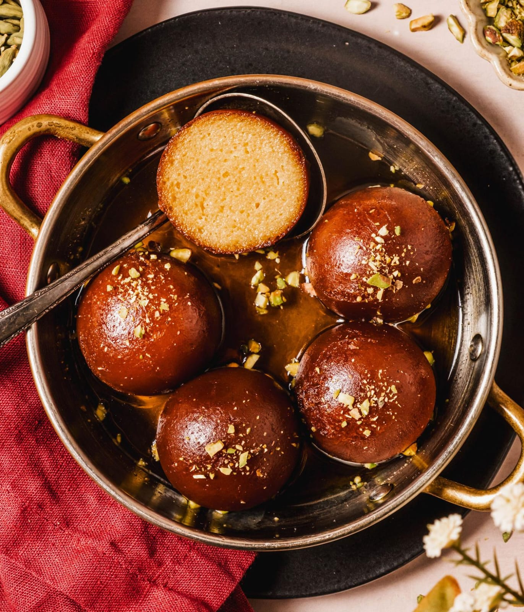

Gulab Jamun
⭐⭐⭐⭐⭐ 4.9 Rating | ⏱ 45 Minutes | 🍽 6 Servings
Category
Dessert
Difficulty
Medium
Calories
185 kcal (1 Piece)
Cooking Style
Indian Sweet
📋 Ingredients
- 1 Cup Milk Powder
- ¼ Cup Maida (All-purpose Flour)
- ¼ tsp Baking Soda
- 2 tbsp Ghee
- ¼ Cup Warm Milk
- Oil or Ghee for Frying
🍯 Sugar Syrup
- 2 Cups Sugar
- 2 Cups Water
- 4 Cardamom Pods
- 1 tsp Rose Water
- A Few Saffron Strands (Optional)
🍳 Required Utensils
- Mixing Bowl
- Deep Frying Pan
- Cooking Spoon
- Saucepan
- Measuring Cups
- Serving Bowl
📖 Introduction
Gulab Jamun is one of India's most popular desserts. Soft milk-based balls are deep-fried until golden brown and soaked in aromatic sugar syrup flavored with cardamom and rose water.
🔬 Principle
The dough should be soft and smooth. Slow frying on medium-low heat ensures even cooking. Warm jamuns absorb warm sugar syrup easily, making them soft and juicy.
👨🍳 Procedure
- Mix milk powder, maida and baking soda.
- Add ghee and warm milk.
- Knead into a soft dough.
- Rest the dough for 10 minutes.
- Prepare sugar syrup using sugar, water and cardamom.
- Add rose water after boiling.
- Make small smooth balls without cracks.
- Heat oil or ghee on medium-low flame.
- Fry the balls until golden brown.
- Remove and immediately place them into warm syrup.
- Soak for at least 2 hours.
- Serve warm or chilled.
⚠ Precautions
- Do not make hard dough.
- There should be no cracks on the balls.
- Fry only on low to medium heat.
- Do not overcook the sugar syrup.
- Always soak in warm syrup.
💡 Chef Tips
- Use fresh milk powder.
- Add saffron for extra aroma.
- Do not overcrowd the pan while frying.
- Serve with vanilla ice cream for a modern dessert.
🥗 Nutrition Facts
| Nutrient | Amount |
|---|---|
| Calories | 185 kcal |
| Carbohydrates | 28 g |
| Protein | 3 g |
| Fat | 7 g |
🍽 Serving Suggestions
- Serve warm after meals.
- Enjoy chilled from the refrigerator.
- Serve with vanilla ice cream.
- Garnish with chopped pistachios or almonds.
🌿 Health Benefits
- Provides instant energy.
- Rich in calcium from milk powder.
- Good dessert for festivals and celebrations.
- Best enjoyed in moderation.
✅ Result
The prepared Gulab Jamuns should be soft, spongy and juicy with a rich golden-brown colour. They should absorb the sugar syrup completely and have a sweet aroma of cardamom and rose water.
🎥 Watch Recipe Video
Learn the complete recipe by watching the step-by-step video.
▶ Watch on YouTube